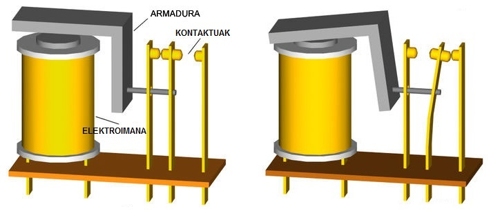

ELEKTROMAGNETISMOA (2/3)
2. MAKINA ELEKTROMAGNETIKOAK
IKASI:
Orain, magnetismoaren eta elektrizitatearen artean dagoen erlazioa ikusiko dugu, makina elektrikoen zenbait adibideren bidez. Adibidez, motor elektrikoa da energia elektrikoa energia mekaniko transformatzen duen makina. Korronte elektrikoak errotorearen (bira egiten duen pieza) elektroimanetatik zirkulatzen duenean, sortzen den eremu magnetikoak erakarpen- eta aldarapen-mugimendua eragiten du.
Bideo honetan, motor elektriko sinplea eraikitzeko adibidea ikus dezakezu.
Makina elektromagnetikoaren beste adibide bat errelea da; errelea kontrol-elementua da, eta haren funtzionamendua elektroiman batean oinarritzen da. Errele bat elektrizitatearen bidez kontrolatutako etengailua bezala dabil; horren bidez, zirkuituak ireki eta itxi daitezke, eta, horretarako, ez da behar pertsona batek esku hartzerik. Harileko korronteak eremu magnetikoa sortzen du, eta horrek armadura eta plaka metalikoa erakartzen ditu. Plaka metalikoa erakartzean, kontaktuek elkar ukitzen dute, nahitaez, eta, horrela, zirkuitua itxi egiten da. Hariletik korronte fluxua eteten denean, kontaktuak banatu egiten dira.
Wikipediatik hartutako irudia
{kind=link}
Beste adibide bat sorgailu elektrikoa da. Sorgailu elektrikoa energia mekanikoa, kimikoa eta argi-energia oinarri hartuta energia elektrikoa sortzen duen mekanismoa da. Adibidez pila da energia kimikoa energia elektriko transformatzen duen sorgailua. Sorgailu elektriko baten funtzionamendua indukzio elektromagnetikoaren printzipioan oinarritzen da. Eroale-espira baten mugimenduak, iman batetik hurbil dagoenean, eroale horretan korrontea agertzea eragiten du. Bi sorgailu elektriko mota daude: dinamoa (mugimendua korronte zuzen transformatzen du) eta alternadorea (mugimendua korronte alterno transformatzen du).
Ikusi, lotura honen bidez, sorgailu elektrikoa nola dabilen:
HAUSNARTU:
Ba al dakizu pertsonaia hauek nor diren? Oersted eta Faraday, elektromagnetismoaren aurkikuntzarekin zerikusia duten zientzialari garrantzitsuak.
- Zereginak:
- Ikertu bi autore horiek eta diseinatu, Glogster-en bidez, poster bat; posterrean jaso haien ekarpenak, asmakizunak edo aurkikuntzak.
- Egin posterra eta, horretarako, erabili multimedia materiala, adibidez, haien aurkikuntzak erakusten dituzten irudiak edo bideoak.
- Argitaratu posterra zure blogean.
 JARRI PRAKTIKAN:
JARRI PRAKTIKAN:
Egizu klik hemen makina elektromagnetikoei buruzko ariketak egiteko